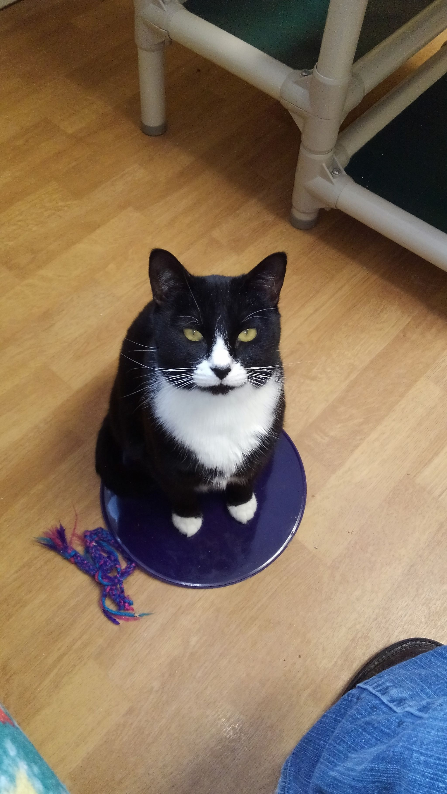

Making Bath Time Fun Having a dog who enjoys bath time can make your life andyour groomer’s life a lot easier. Even if you plan on taking your dog to […]
Paw Cleaning Training Here is a link to a video about how to get started with training your puppy to accept foot cleaning. Teaching skills before you are going to […]
Bath Time Part 2 Blow Dryer Blow drying can be an important part of grooming for some dogs. Dogs with very thick coats especially benefit from being blow dried. Getting […]